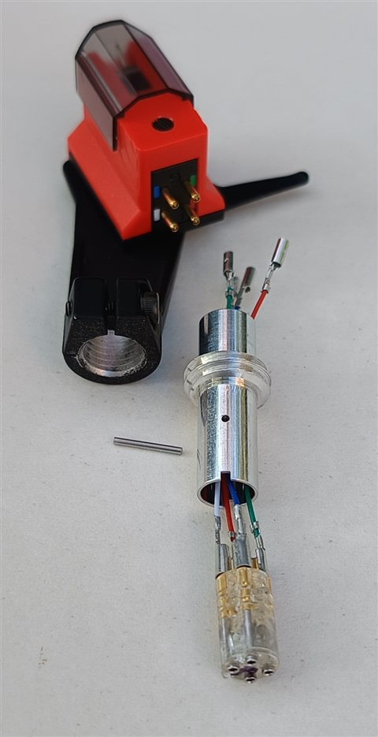
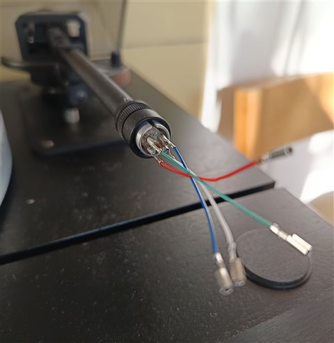

Thorens TP-95 headshell disassembly to replace the wires
The TP-95 headshell is part of the TP-90 tonearm used on the following Thorens turntables:
- TD-160 S Mk V
- TD-320 mkII, mkIII (not the plain TD-320)
- TD-520
- TD-2001
- TD-3001
The headshell is hard to find today and expensive. The most common problem is broken wires. They are very easy to replace, although no explicit instructions seem to be available online – hence this article.
Disassembly
The TP-90 service manual lists the headshell as a single part, but it is easy to take apart:
- Disconnect the wires from the cartridge.
- Loosen the screw and pull the connector tube out of the headshell.
- Push or pull out the thin pin that runs perpendicular to the axis of the connector tube.
- Push the connector out of the tube. The soldering points are now accessible and wires can be replaced.

Wires
Order standard headshell leads, at least 55 mm long. Wires 40 mm long are easier to find, but they are a little too short for the TP-95. The wires have clip connectors on both ends. The standard procedure is to remove the clip at one end and solder this end to the headshell connector pin. Or you can keep the clip in place and crimp it to the connector pin. As the connector pin is greater in diameter, you will have to widen the clip a little with some conical tool (e.g. a thicker nail).
Wiring
Wiring of the tonearm connector found on my TP-90 , standing in front of the turntable and looking at the connector in the tonearm tube:
| Position | Wire | Signal |
|---|---|---|
| Top left | green | R ground |
| Bottom left | red | R hot |
| Top right | blue | L ground |
| Bottom right | white | L hot |
Note that this is just what I found in my tonearm and there is no guarantee this was a stable company standard. Just check the pin assignment in your own tonearm (measure resistance to output cinch connectors) and wire the headshell connector accordingly. The assignment of pins does not matter as long as it is consistent along the whole path from the cartridge to the phono output.
